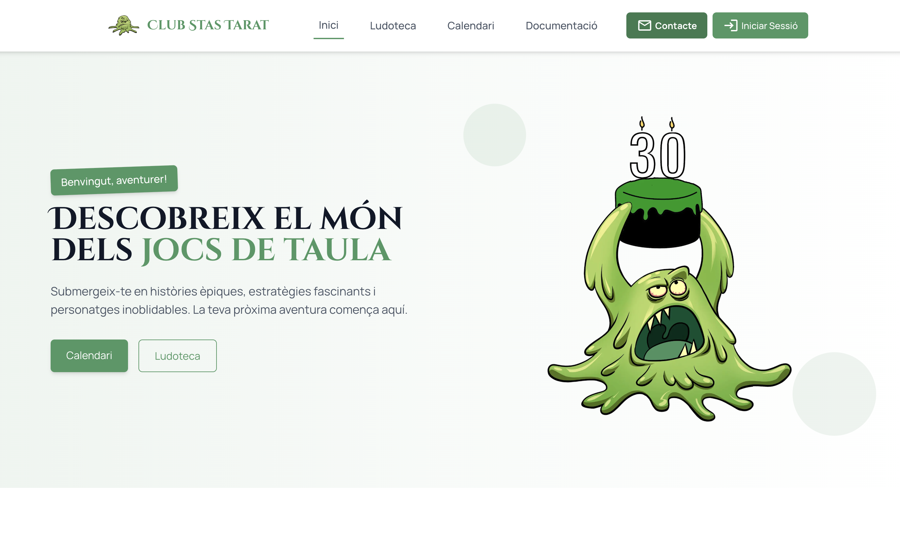

web platform
2026
stastarat.com
Web para Club Stas Tarat orientada a presentar la asociacion, sus secciones, calendario y ludoteca con una estructura clara.
Portfolio
Me interesa trabajar en proyectos que supongan un reto tecnico y que tengan una utilidad clara.
Proyectos

Web para Club Stas Tarat orientada a presentar la asociacion, sus secciones, calendario y ludoteca con una estructura clara.

Plataforma multi-tenant hecha con Laravel para gestion interna y operaciones diarias en restauracion.
Gestor de contrasenas local hecho en Go, pensado para una experiencia directa desde terminal.
Perfil
Desarrollo web full stack con mayor interes por la parte backend.
Enfoque
Logica de negocio, herramientas internas y aplicaciones con estructura solida.
Contacto